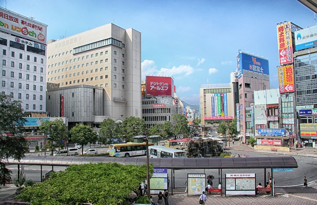
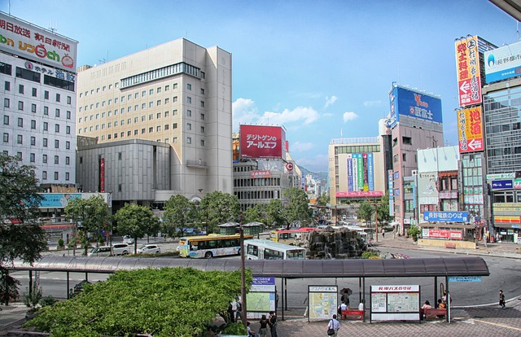

Information provided by Wikipedia
The 2011 Tohoku Earthquake and Tsunami, also known as the Great East Japan Earthquake, occurred on March 11, 2011 at 2:46PM Local time when a Magnitude 9.0 megathrust earthquake some 70 kilometres
of the coast of the Tohoku region in Japan. It was the most powerful known earthquake ever to have hit Japan, and the fifth most powerful earthquake
in the world since modern record-keeping began in 1900.
The earthquake triggered triggered a massive tsunami that reached heights of up to 40 metres in areas near the Iwate Prefecture of Tohoku and, in the case
of Sendai, travelled up to 10 kilometres inland. Like the 2004 Boxing Day Tsunami, the tsunami proved to be far deadlier than the earthquake, as the wave
swept dozens of towns and cities located along the Japanese coast.
The resulting tsunami also struck the Fukushima Daiichi Nuclear Power Plant, knocking out crucial emergency systems and causing the partical meltdown
of three of plant's six reactors. The meltdowns quickly became the second worst nuclear disaster ever to occur after the Chernobyl Disaster, and led to
the creation of a 20km exclusion zone around the destroyed plant within the Fukushima Prefecture.
In the aftermath, a report by Japanese authorites confirmed 15,884 deaths, 6,147 injuries, and 2,636 missing across twenty prefectures,
as well as 127,290 buildings being totally collapsed, 272,788 buildings 'half collapsed', and another 747,989 buildings being partially damaged.